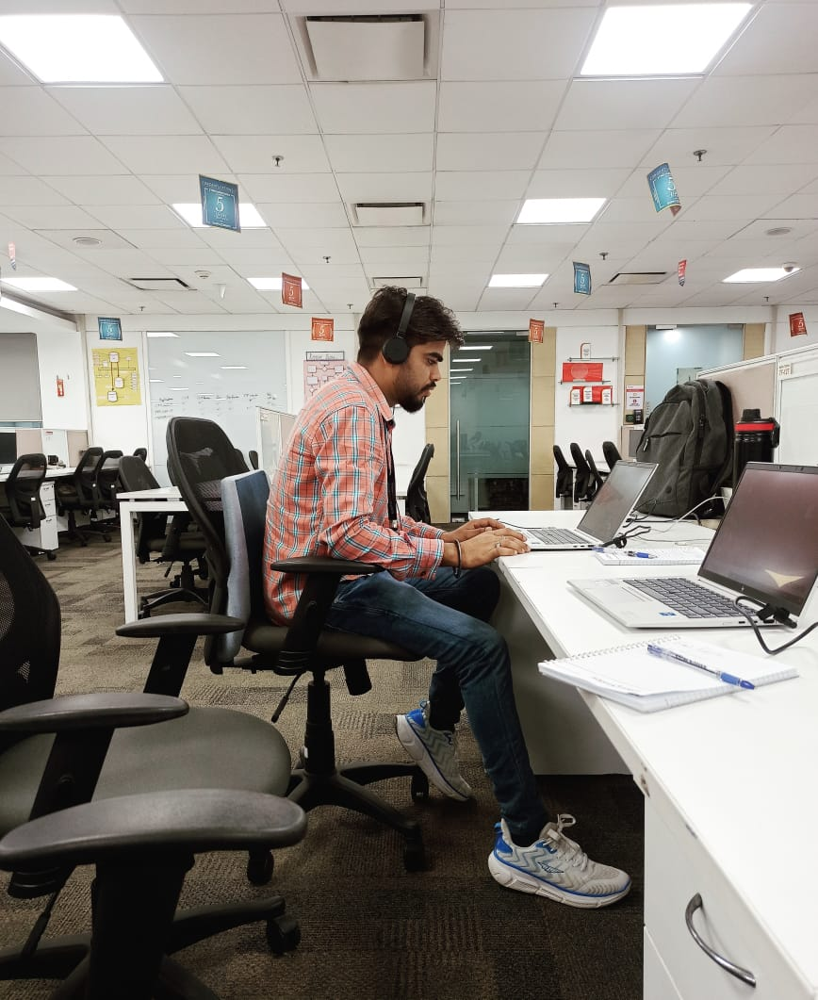

Hi I am
Deepak Mewada
Software Engineer
I am a dedicated software engineer with 1-2 years of experience in the IT industry, specializing in software development and system design. My background includes hands-on experience with C/C++ and other programming languages, where I have successfully developed, tested, and maintained various applications. I have a strong foundation in object-oriented programming, data structures, and algorithms, and am adept at problem-solving and optimizing code for performance. My experience also includes collaborating with cross-functional teams, utilizing modern development tools, and adhering to best practices in coding and version control. I am passionate about leveraging technology to solve complex problems and eager to contribute to innovative projects in a dynamic environment..
